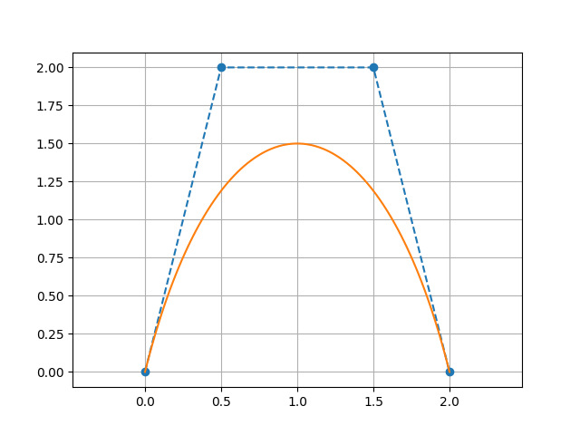
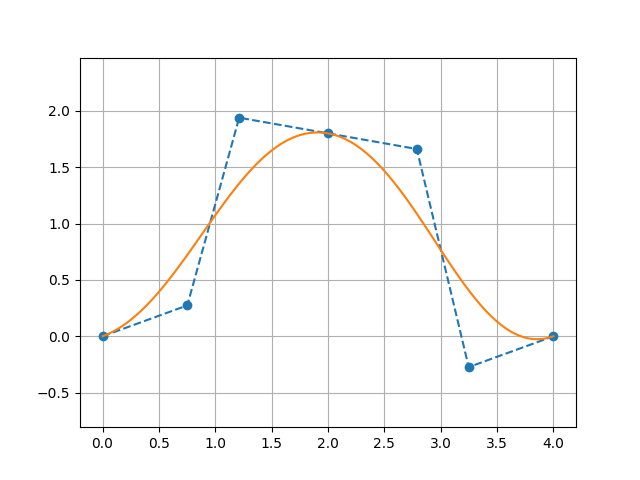

Parametric Curves (2D)
ParametricCurve2D
The base class for 2D parametric curves. A ParametricCurve2D holds two Function2D instances — one for x(t) and one for y(t) — and evaluates the curve for t ∈ [0, 1].
import plane.ParametricCurve2D
import plane.functions.Polynomial
// Circle: x(t) = cos(2πt), y(t) = sin(2πt) (approximated with polynomials here)
val circle = ParametricCurve2D(
xParametricFunction = Polynomial(listOf(1.0, 0.0, -2.0)), // any Function2D
yParametricFunction = Polynomial(listOf(0.0, 1.0, -1.0))
)
val point: Point2D = circle(0.25) // evaluate at t = 0.25Evaluation
// Single parameter
val p = curve(0.5)
// Multiple parameters at once
val points: List<Point2D> = curve(listOf(0.0, 0.25, 0.5, 0.75, 1.0))Derivative and integration
// dy/dx at a given t (via chain rule)
val slope = curve.derivative(0.5)
// Approximate arc-length integral (numerical, default 200 points)
val length = curve.integrate(0.0, 1.0)
val length2 = curve.integrate(0.0, 0.5, nPoints = 500u)BezierCurve
A Bézier curve of any degree defined by a list of control points. The curve passes through the first and last control points; intermediate control points act as attractors.
Internally the x and y parametric functions are constructed from Bernstein basis polynomials.
Construction
import plane.BezierCurve
import plane.elements.Point2D
// Cubic Bézier (4 control points)
val bezier = BezierCurve(listOf(
Point2D(0.0, 0.0), // start (on curve)
Point2D(0.5, 2.0), // control point 1
Point2D(1.5, 2.0), // control point 2
Point2D(2.0, 0.0) // end (on curve)
))Any number of control points is accepted; the degree equals n - 1 where n is the count.
// Linear (2 points) — straight line
val line = BezierCurve(listOf(Point2D(0.0, 0.0), Point2D(1.0, 1.0)))
// Quadratic (3 points)
val quad = BezierCurve(listOf(
Point2D(0.0, 0.0),
Point2D(1.0, 2.0),
Point2D(2.0, 0.0)
))Evaluation
val start = bezier(0.0) // always equals controlPoints.first()
val end = bezier(1.0) // always equals controlPoints.last()
val mid = bezier(0.5)Accessing control points
bezier.controlPoints.forEach { println(it) }Visualization
// requires geomez-visualization
bezier.plot() // shows curve + control polygon with dashed lines
CubicBezierSpline2D
A piecewise cubic Bézier spline: a sequence of cubic Bézier segments joined at shared endpoints.
Control point layout
The flat control-point list must have 4 + 3n points (where n ≥ 0 is the number of additional segments):
[P0, P1, P2, P3 | P4, P5, P6 | P7, P8, P9 | ...]
← segment 0 → ← seg 1 → ← seg 2 →P3 from segment 0 and P3 for segment 0 are the same point as the start of segment 1 (P3 = start of segment 1).
import plane.CubicBezierSpline2D
import plane.elements.Point2D
// Two cubic Bézier segments (7 = 4 + 3×1 control points)
val spline = CubicBezierSpline2D(listOf(
Point2D(0.0, 0.0), // seg 0 start (on curve)
Point2D(0.3, 1.0), // seg 0 cp1
Point2D(0.7, 1.0), // seg 0 cp2
Point2D(1.0, 0.0), // seg 0 end = seg 1 start (on curve)
Point2D(1.3, -1.0), // seg 1 cp1
Point2D(1.7, -1.0), // seg 1 cp2
Point2D(2.0, 0.0) // seg 1 end (on curve)
))
val p = spline(0.5) // global t ∈ [0,1]Building from smooth segments
SmoothCubicBezierSplineControlPoints lets you specify each anchor by its position and tangent angle, so the control points are derived automatically:
import plane.CubicBezierSpline2D
import plane.elements.Point2D
import plane.elements.SmoothCubicBezierSplineControlPoints
import units.Angle
val spline = CubicBezierSpline2D(listOf(
SmoothCubicBezierSplineControlPoints(
pointOnCurve = Point2D(0.0, 0.0),
angle = Angle.Degrees(0.0),
distanceControlPointBefore = null, // first segment: no "before" handle
distanceControlPointAfter = 0.5
),
SmoothCubicBezierSplineControlPoints(
pointOnCurve = Point2D(2.0, 1.0),
angle = Angle.Degrees(30.0),
distanceControlPointBefore = 0.5,
distanceControlPointAfter = 0.5
),
SmoothCubicBezierSplineControlPoints(
pointOnCurve = Point2D(4.0, 0.0),
angle = Angle.Degrees(0.0),
distanceControlPointBefore = 0.5,
distanceControlPointAfter = null // last segment: no "after" handle
)
))Accessing individual segments
spline.bezierCurves.forEachIndexed { i, segment ->
println("Segment $i: ${segment.controlPoints}")
}Visualization
// requires geomez-visualization
spline.plot()